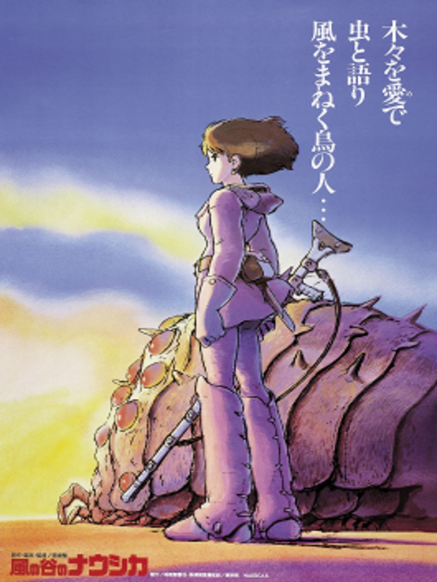
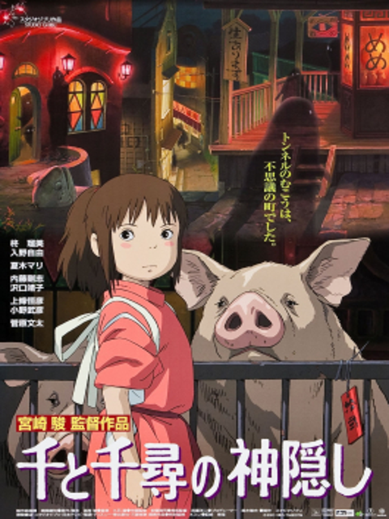
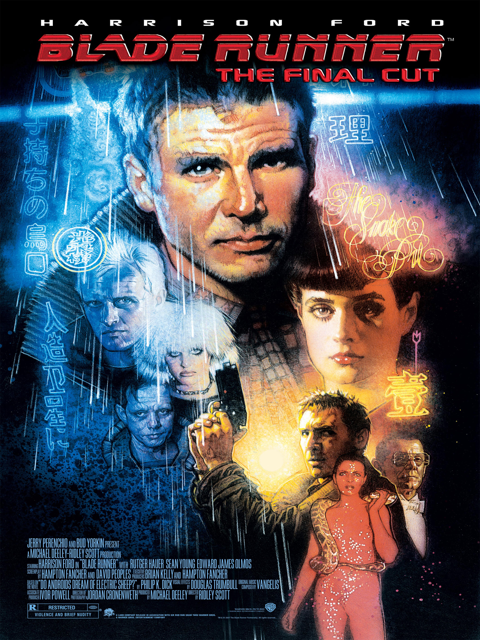
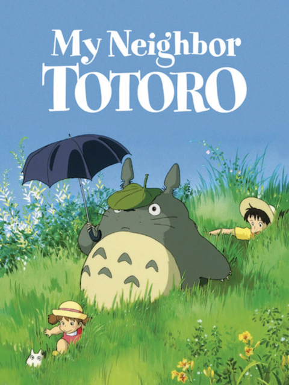
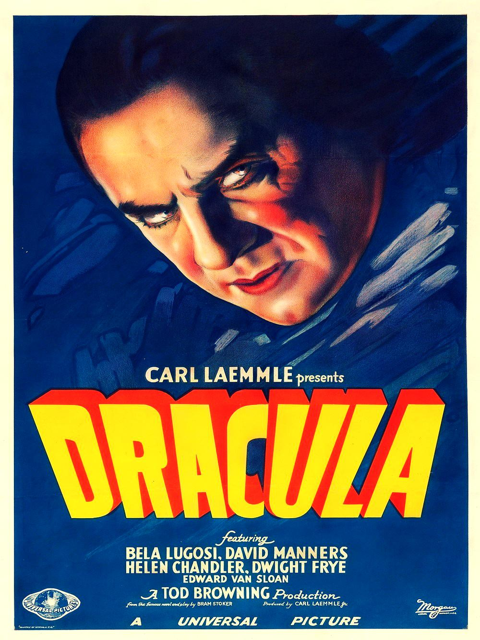
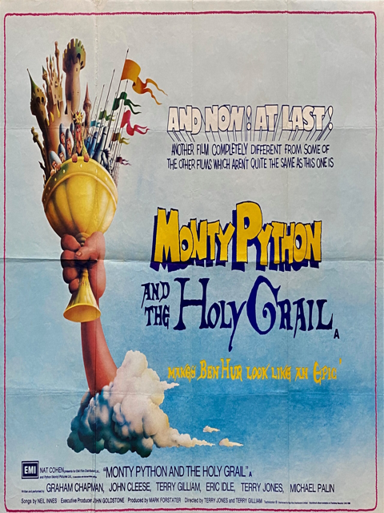
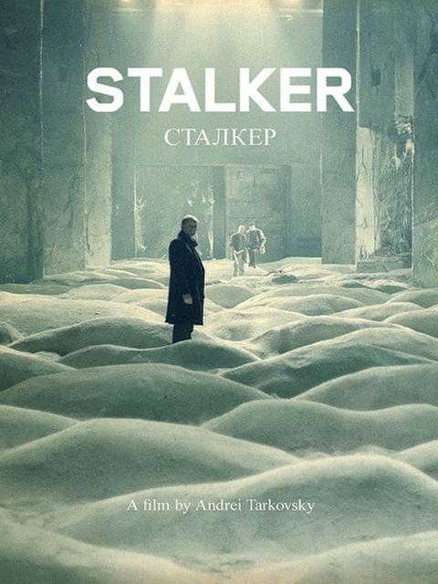
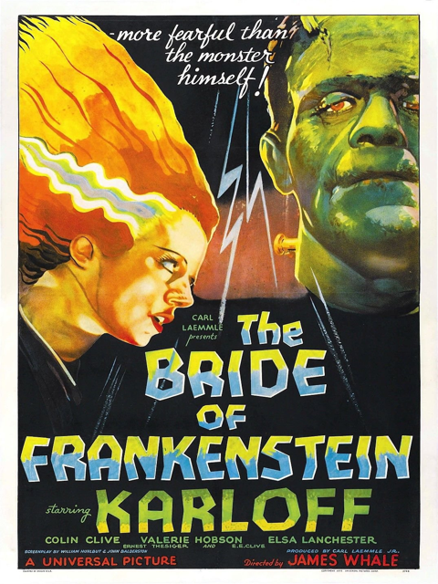
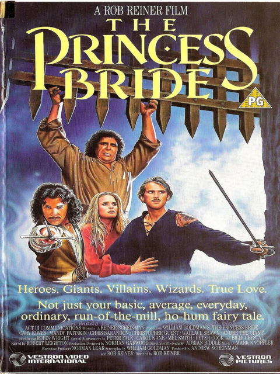
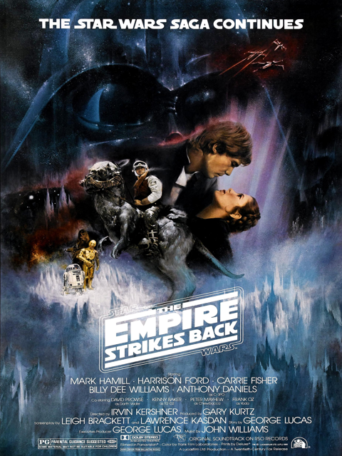

1984
The progenitor of Ghibli's future success, Nausicaa provides a glimpse into the ecological fears of the 1980's that strikes close to home even with modern audiences.
Fantasy / Adventure
2001
A cast of colorful characters populate this film, reminiscent of classical fish out of water tales such as Alice in Wonderland.
Drama / Supernatural
1982
Blade Runner is an interesting time capsule of how the future would look to people in the 1980s
Mystery / Sci-Fi
1988
An iconic film about the value of childhood imagination
Fantasy / Comedy
1931
A horror movie classic that would go on to define an entire archetype for generations.
Supernatural / Horror
1975
The definitive British comedy that combines fairy tale classic with absurd humor.
Comedy / Fantasy
1979
A surreal and philosophical film about people's relationship with things beyond their control.
Sci-Fi / Drama
1935
One of the earilest examples of a story continuation in film, one which stood toe-to-toe with the original's legacy.
Fantasy / Thriller
1987
A mix of romance and comedy, Princess Bride uses the framing narrative of its source material to it's limit.
Romance / Comedy
1980
This film needs no introduction, a science fantasy classic.
Sci-Fi / Action